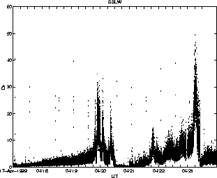
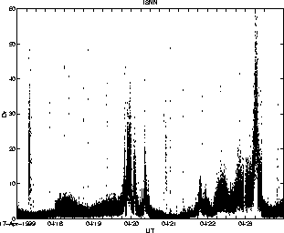
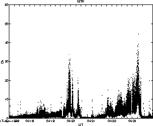
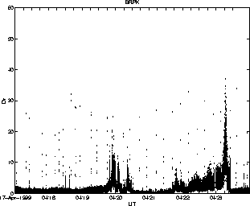

Data shown are surface wave reduced displacement (Drs). Absolute displacement data suggest body wave formula may be a better choice.
Max Drs values are 50, 60, 45 & 38 cm^2. Max Dr values are 110, 160, 130 & 120 cm^2 assuming a wavelength of 2 km.
Distances: SSLS 5.3, SSLN 6.5, SSLW 10.1, ISNN 14.8, ISTK 17.0, BRPK 19.0, WTUG 28.9 km
 
 